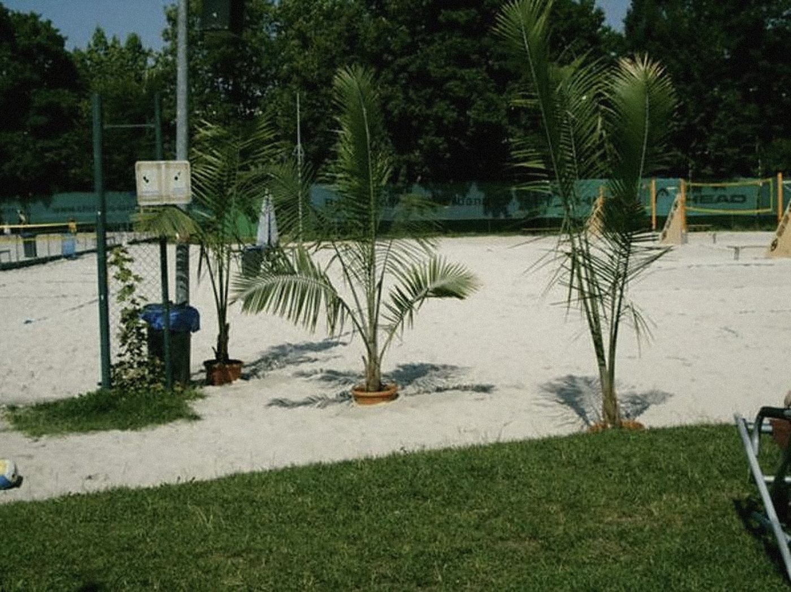

Ein Tennisverein in der Beach-Arena.
Sandplätze, Beachfelder und ein Biergarten an der U6 Studentenstadt. Für Kinder, Familien und alle, die gern draußen spielen.

- Gegründet
- 1995
- Sandplätze
- 5
- Sportarten
- 7
- Aufnahmegebühr
- keine
Tennis macht Spaß. Jung und Alt.
Tennis trainiert den ganzen Körper und ist damit eine der gesündesten Nebensachen der Welt. Am meisten Freude macht es im Verein, mit der ganzen Familie.
Schnuppern Sie bei uns rein: mit viel Vergnügen, mit Sport und Geselligkeit und ohne Aufnahmegebühr. Rufen Sie an, wir zeigen Ihnen die Anlage.
Über den VereinWo Spaß im Spiel ist, kommt das Interesse von allein.
Sportarten
Mehr als Tennis.
Kein anderer Tennisverein in München bietet seinen Mitgliedern so viele Beachsportarten. Gerade die jüngsten Mitglieder spielen hier nicht nur Tennis.
- Tennisauf fünf Sandplätzen
- Beachtennisneu
- Beachvolleyball
- Beachbadminton
- Beachsoccer
- Speedminton
- Tischtennis

Tennisschule
Training direkt auf unserer Anlage.
Christos Theodosiadis, Diplom-Tennistrainer und Diplom-Sportlehrer, unterrichtet vom Kindergartentennis bis zum Seniorenkurs. Die Kurse laufen ganzjährig, im Winter in der Halle.
- Kinder und Jugendliche
- Erwachsene und Senioren
- Familien und Firmen

Kinder und Jugend
Für die Jüngsten zuerst.
Unser Ziel ist es, Kinder, Jugendliche und ihre Eltern für Bewegung und Sport zu begeistern und ihr Interesse am Vereinssport zu wecken. Talentierte Kinder fördern wir gezielt.
- Projekt
„Mach mit… Spiel in der Beacharena!“: In Kooperation mit dem Sportamt München konnten Kinder und ihre Eltern kostenlos Tennis lernen.
- Sommerferien
Täglich Tennis- und Beachsportcamps. Informationen bei Christos unter 0172 913 89 65.


Café, Bistro und Beachbiergarten
Sie machen das Clubleben noch schöner und bringen unsere Gäste ein Stück näher an den Urlaub.
Aus dem Club
Alle Neuigkeiten- Saison
Die Plätze sind bereit.
Aktivitäten- und Spielpläne hängen im Club aus. Details bitte vor Ort erfragen.
- Ferien
Camps im Sommer.
Täglich Tennis und Beachsport. Informationen bei Christos.
- Projekt
Mach mit… Spiel in der Beacharena!
Fotos vom Projekt in der Galerie.
- Club
Bei uns ist immer was los.
Vor allem zwanglos. Bilder von Anlage und Festen in der Galerie.